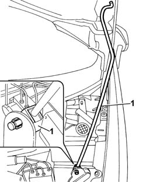
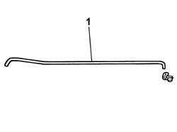

7025A58 DEVICE FOR HOLDING BONNET LID OPEN - R+R
- Path
- Procedures > 70 FITTINGS > 7025 COMPARTMENT LIDS > 7025A LOCATION OF BONNET WIND NOISE > 7025A58 DEVICE FOR HOLDING BONNET LID OPEN - R+R
- Kind
- repair procedure (removal / refitting; the operation number is the code)
- Applies to
- all engines; all production periods
- Interactive page
- https://sloeber94.github.io/elrnDB-fUlss/en/#/179007753
Applies to: all engines; all production periods
 Removing
Removing
 Refitting
Refitting- Open the bonnet.
1. Release the stay from the fastening clip.

Applies to: all engines; all production periods
1. Remove the bonnet stay.

Applies to: all engines; all production periods
Refitting
Removing- Position the bonnet stay.
- Secure the stay to the fastening clip.
- Close the bonnet.